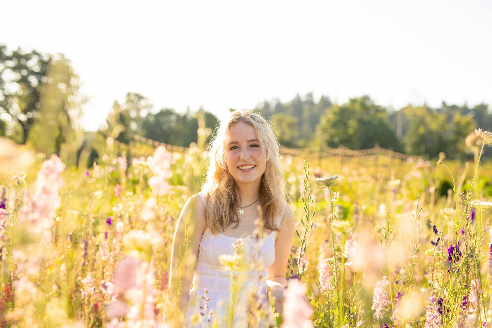

Kendall.Paige.Rice@gmail.com | 408-663-8233 | www.linkedin.com/in/kendall-p-rice
Data Science student at the University of Oregon with an interest in technology, analytics, and problem-solving. I enjoy working on projects involving Python, data analysis, and simulations because I like finding patterns and figuring out how things work. Through both school and work experience, I’ve developed strong communication, teamwork, and adaptability skills. I’m always looking for opportunities to learn new technologies and gain hands-on experience in the tech field.
High School Diploma | Lake Washington High School, 2020-2024
Bachelor of Science in Data Science | University of Oregon, 2024-2028
This project uses natural language processing (NLP) techniques to analyze The Wonderful Wizard of Oz by L. Frank Baum. The program retrieves the novel from Project Gutenberg, cleans and tokenizes the text using spaCy, and performs word frequency analysis to identify the most common terms in the story. It also extracts and analyzes named entities such as people, places, and organizations, providing additional insights into the novel’s characters, settings, and themes. Through these analyses, the project demonstrates how NLP can be used to better understand the content and structure of a literary work.
This project uses a Rio 2016 Olympics athlete dataset to explore how gold, silver, and bronze medals are distributed across different sports. The code loads and cleans the data using pandas, performs exploratory analysis, and creates visualizations including a heatmap and a stacked bar chart to compare medal counts by sport. Through these visualizations, the project identifies trends in medal distribution and answers the research question about which sports earned the most medals during the Rio 2016 Olympics.
This project analyzes the relationship between student lifestyle habits and academic performance using a comprehensive dataset from Kaggle. The dataset contains information about 1,000 students and includes 16 variables covering various aspects of student life, including study habits, social media usage, sleep patterns, diet quality, exercise frequency, and academic outcomes. The analysis focuses on understanding how different study patterns correlate with exam performance.The project demonstrates fundamental data analysis skills including data cleaning, statistical calculations, and comparative analysis using Python and pandas.